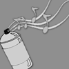
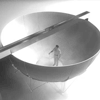
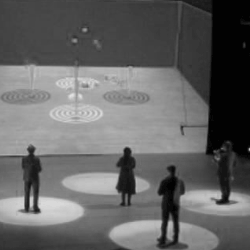
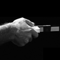
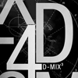
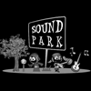
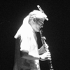

Several installations, artworks, and telepresence systems have been realized using the SPIN Framework, follow the links below to see some early examples of work created with SPIN:
|  |
Multi-user sound installation, featuring motion tracking, audiovisual overview, subjective spatialized audio rendering, rendering on mobile devices. |
|  |
Several works inclusing immersive display, distributed 3D virtual environments, and telepresence. |
|  |
A musical performance system based on the Espaces Susceptible project, which uses audio sampling to create flying 3D sounds that respond to physical forces (attractions, repulsion, gravity, bouncing, etc). |
|
Artistic telepresence installation, using the SAT telepresence station. |
|
|  |
A distributed interactive installation, using low-cost sensors (Wii controllers) to interact with a mix of physical and virtual elements. |
Evolution & older works:
The SPIN Framework evolved from a predecessor project, called Audioscape, which was mostly concerned with 3D audio rendering in vitrual environments. SPIN was created in part as a layout tool for spatial audio scenes, and in part for visual feedback while interacting with 3D sound. Below are some examples, where we can see the beginnings of 3D visualiation using the SPIN framework:
|
 4dmix3 |
 SoundPark |
 Blairatta Policeme |
Ménagerie Imaginaire |